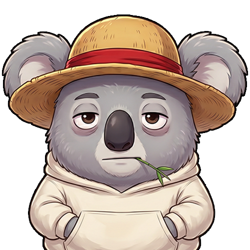
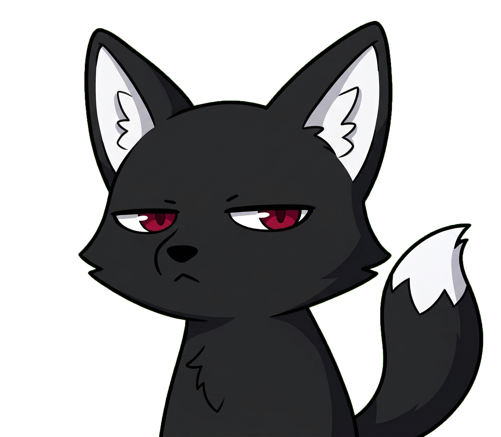
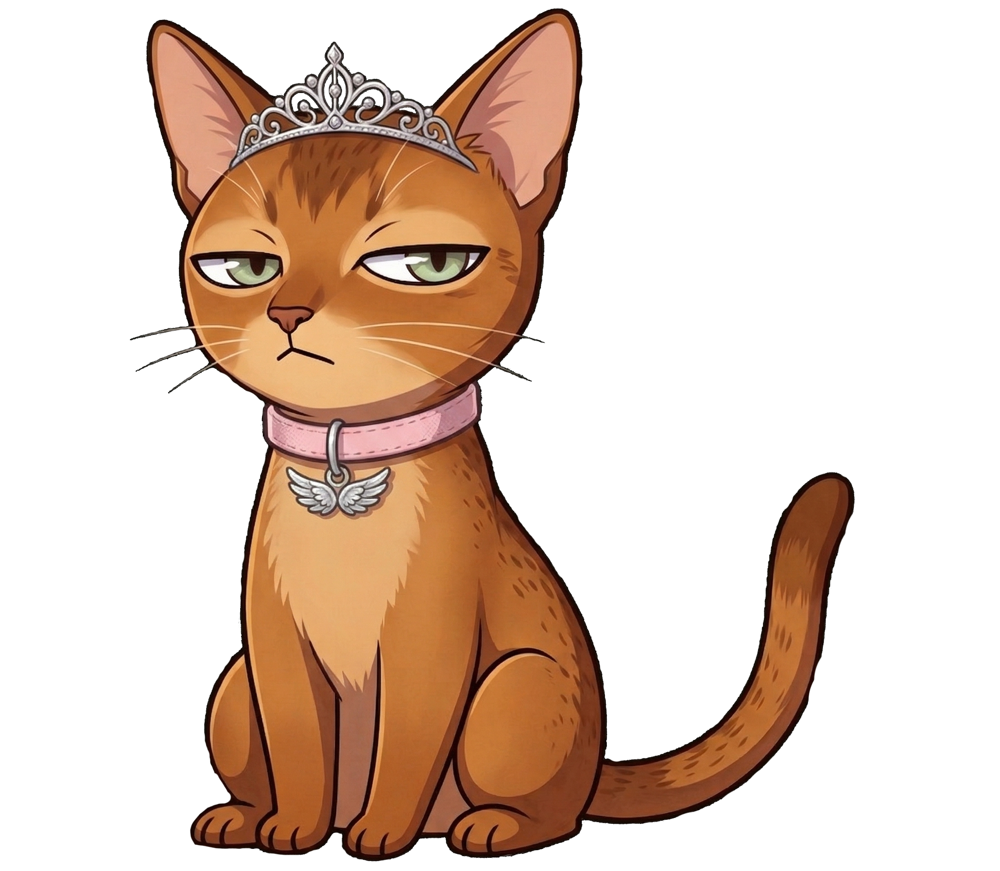
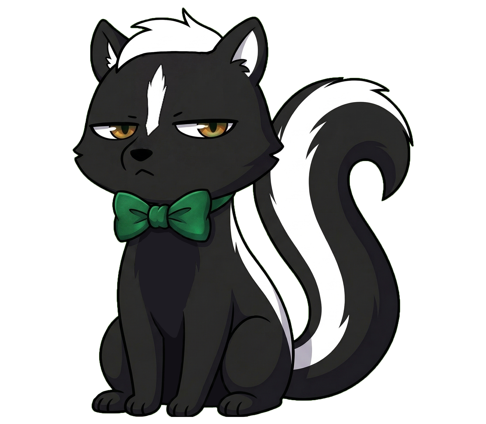
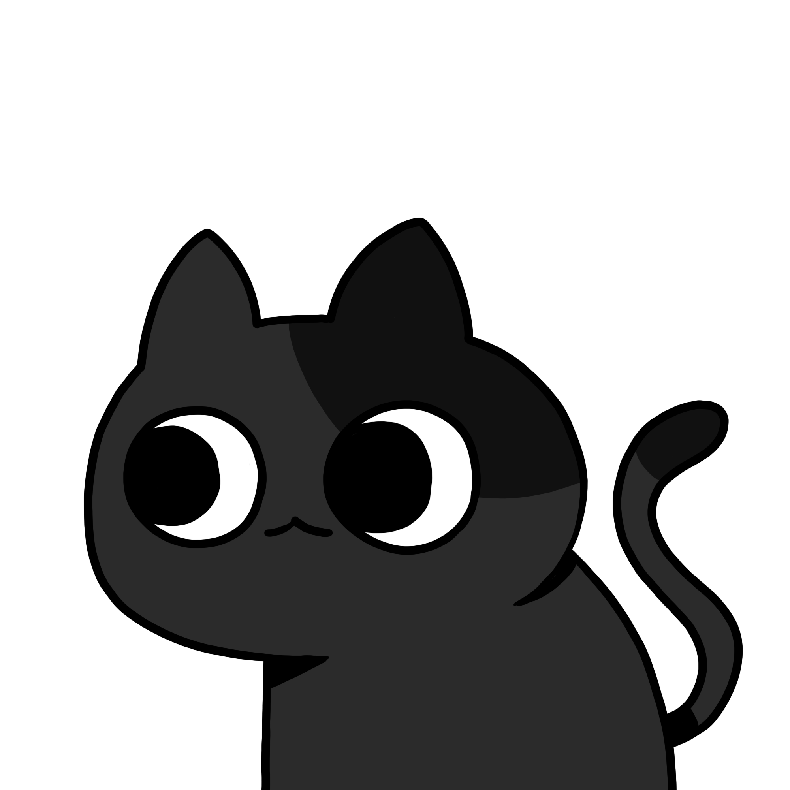
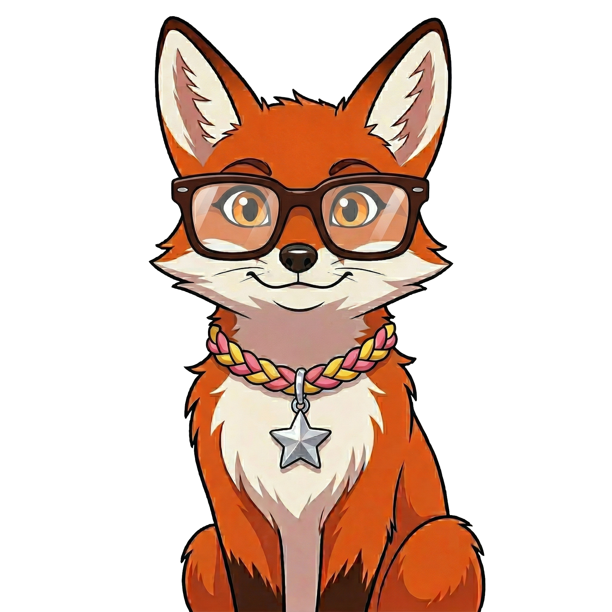
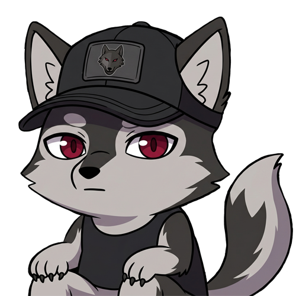
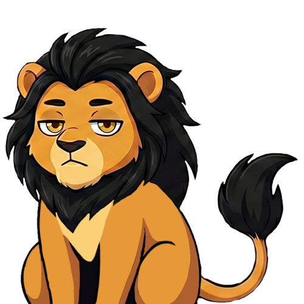
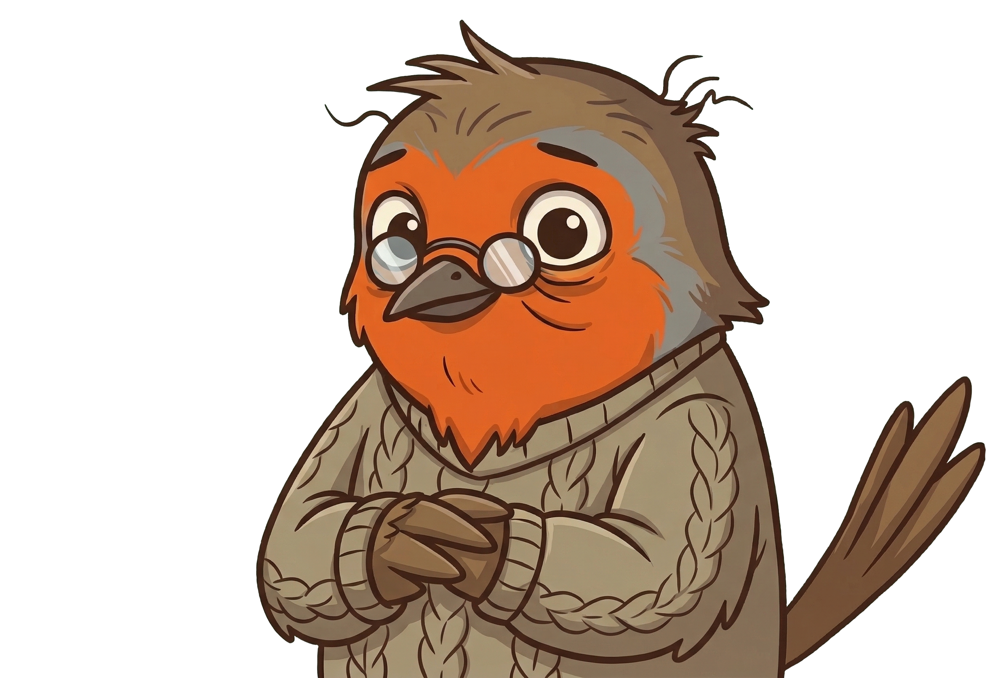
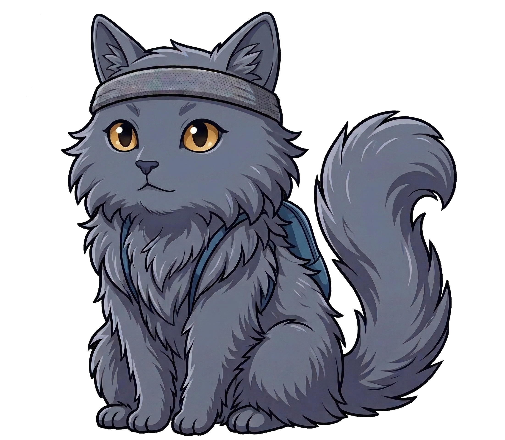

Le Collectif
Cette page regroupe exclusivement nos créateurs liés à la WebTV (notre équipe Esport se trouve dans Nos Projets).
Membres Actifs

Aka
Représenté par un koala portant un chapeau de paille. Troll dans l'âme, il ne rate jamais une occasion de vanner tout ce qui bouge, lui-même inclus. Membre historique du projet initial de 2025, il reste aujourd'hui une figure fidèle et indispensable du collectif. On le retrouve d'ailleurs très régulièrement pour apporter sa bonne humeur (et ses piques) à l'émission Manga Sunday.

Fawks
Représenté par un renard noir. Adepte d'humour noir et de cynisme (avec une pointe de "beaufitude" assumée), il revendique pleinement son côté nerd pointilleux. Il joue principalement à Overwatch, mais touche aussi au retrogaming et à Minecraft. Il est également le co-animateur de l'émission Manga Sunday.

Garekii
Surnommée "Venti" par le groupe et représentée par un chat de style Abyssin. Présence fidèle et rassurante, elle accompagne souvent le collectif durant les sessions Overwatch sur son personnage de cœur, Mercy. De nature très discrète, elle préfère la tranquillité du chat écrit pour communiquer avec le groupe.

Kaly
Représentée par une moufette avec un nœud papillon vert. De nature plutôt chill et cynique, elle se fait discrète la plupart du temps... jusqu'à ce qu'un jeu mette ses nerfs à rude épreuve ! Elle évolue majoritairement sur Overwatch, fait quelques détours par le mode Jump d'Urban Terror, et aime varier les jeux selon l'humeur.

Lady
Représentée par un chat noir. Attention, risque élevé de "zoomies" et de "sugar rush" durant ses lives ! Grosse joueuse de gacha, fan inconditionnelle de Resident Evil et adepte du culte de Red Dead Redemption 2. Côté tryhard, elle joue régulièrement à Valorant avec l'équipe.

LaVariante
Surnommée "Mouflette" par le groupe et représentée par un renard orange à lunettes. Proche de longue date de Kaly, elle est un peu tête en l'air, souvent distraite et débordante d'énergie verbale. Bien qu'elle n'ait pas sa propre chaîne pour le moment, sa motivation est sans faille et elle participe activement aux émissions de la WebTV.

Okami
Représenté par un loup bicolore gris et noir. C'est le grand spécialiste de la culture asiatique du groupe : fan pointu d'animation, de mangas, de gaming asiatique et de K-pop. Au sein du collectif, il met ses connaissances à profit principalement lors de ses interventions régulières dans l'émission Manga Sunday.

Shig
Représenté par un lion à crinière noire. Souvent amicalement qualifié de "GIGA weeb" par Fawks, il est une véritable encyclopédie de la culture J-RPG (Yakuza, Persona) et des univers Manga/Anime. Il est un pilier de la production de Manga Sunday et intervient également comme joueur remplaçant sur Overwatch.

Vivaldi
Représenté par un rouge-gorge à lunettes. Musicien accompli, il apporte sa patte artistique au groupe. Il passe désormais la majorité de son temps sur Overwatch (qu'il a débuté à l'été 2025 mais où il a déjà explosé le temps de jeu de la plupart des vétérans). Il est aussi reconnu pour son excellent niveau sur le mod Jump d'Urban Terror.

Waquima
Représentée par un chat gris style British shorthair. C'est la sportive incontestée de l'équipe, avec une énergie à revendre ! Un brin distraite, elle possède un franc-parler souvent teinté d'un humour très brut. Elle joue principalement à Valorant lors de ses streams, et opère en tant que Main Ana sur Overwatch.
Invités Récurrents
Nevermore est un collectif ouvert.
Cet espace accueillera nos invités récurrents, créateurs amis et intervenants réguliers au fil de nos émissions et de nos rencontres.